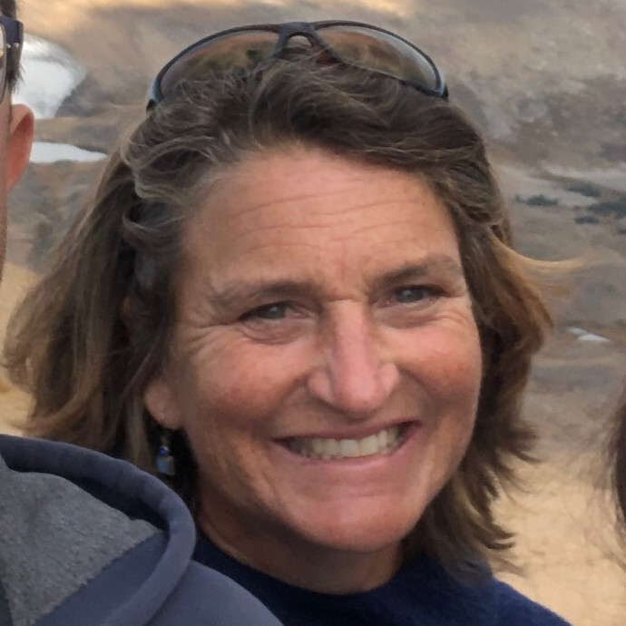
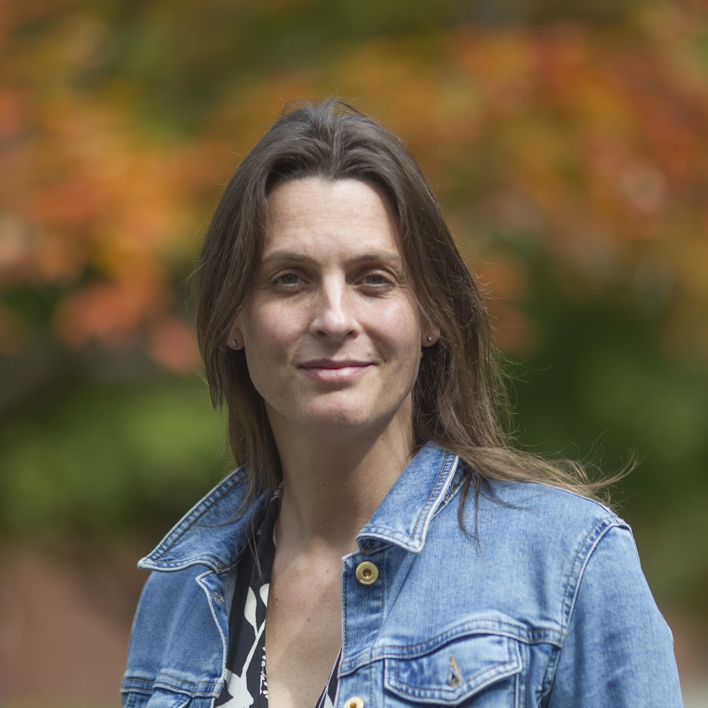
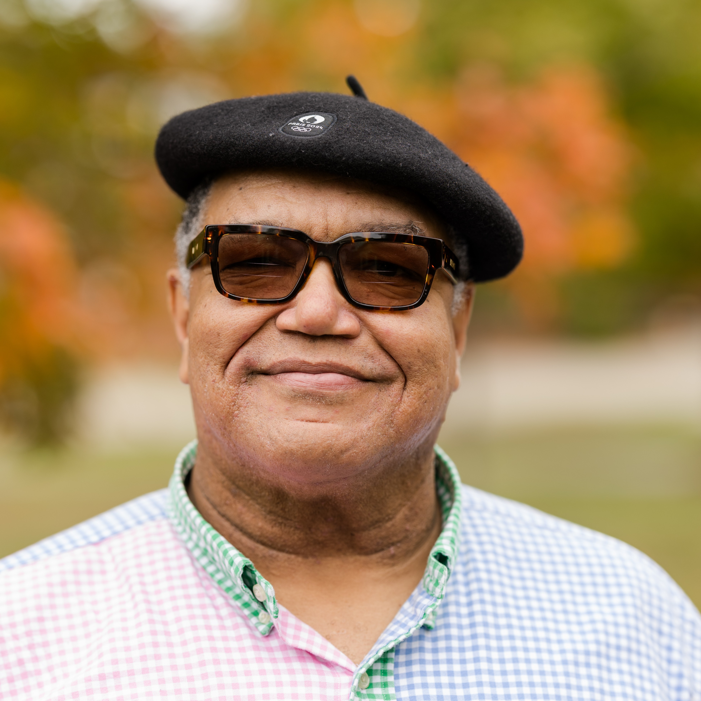
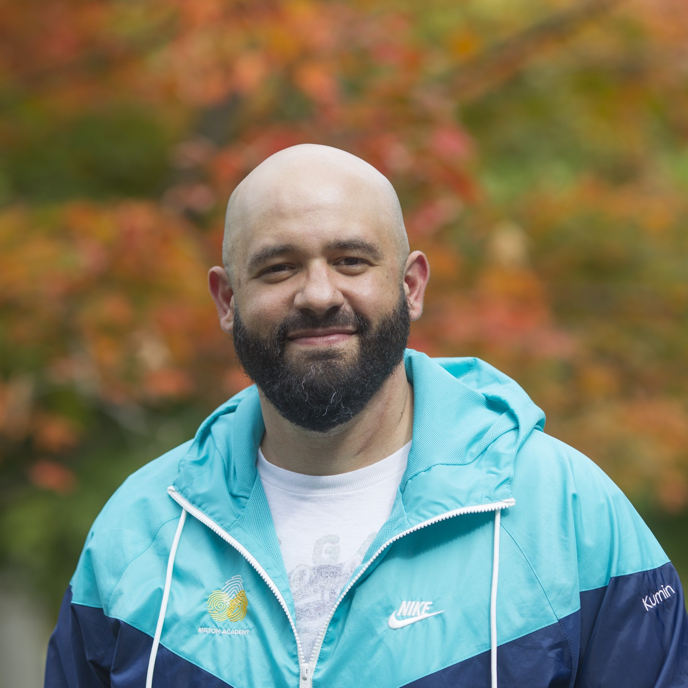
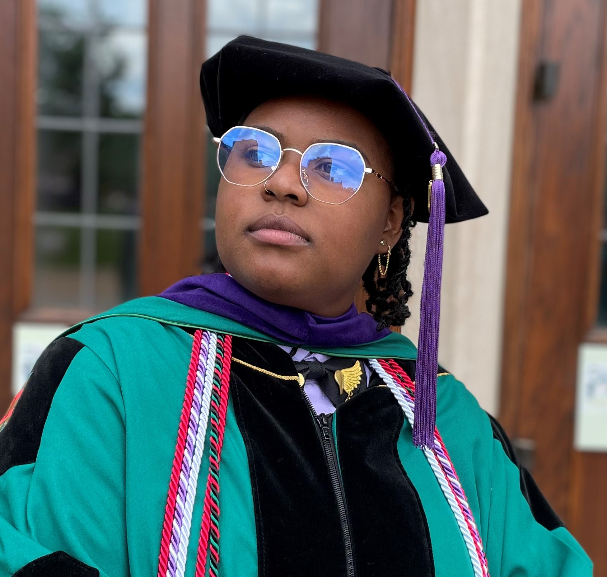
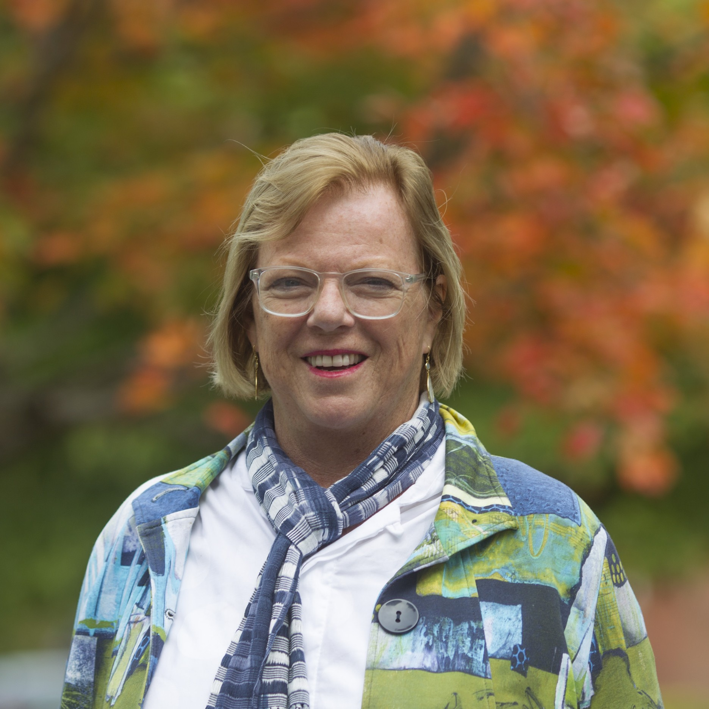
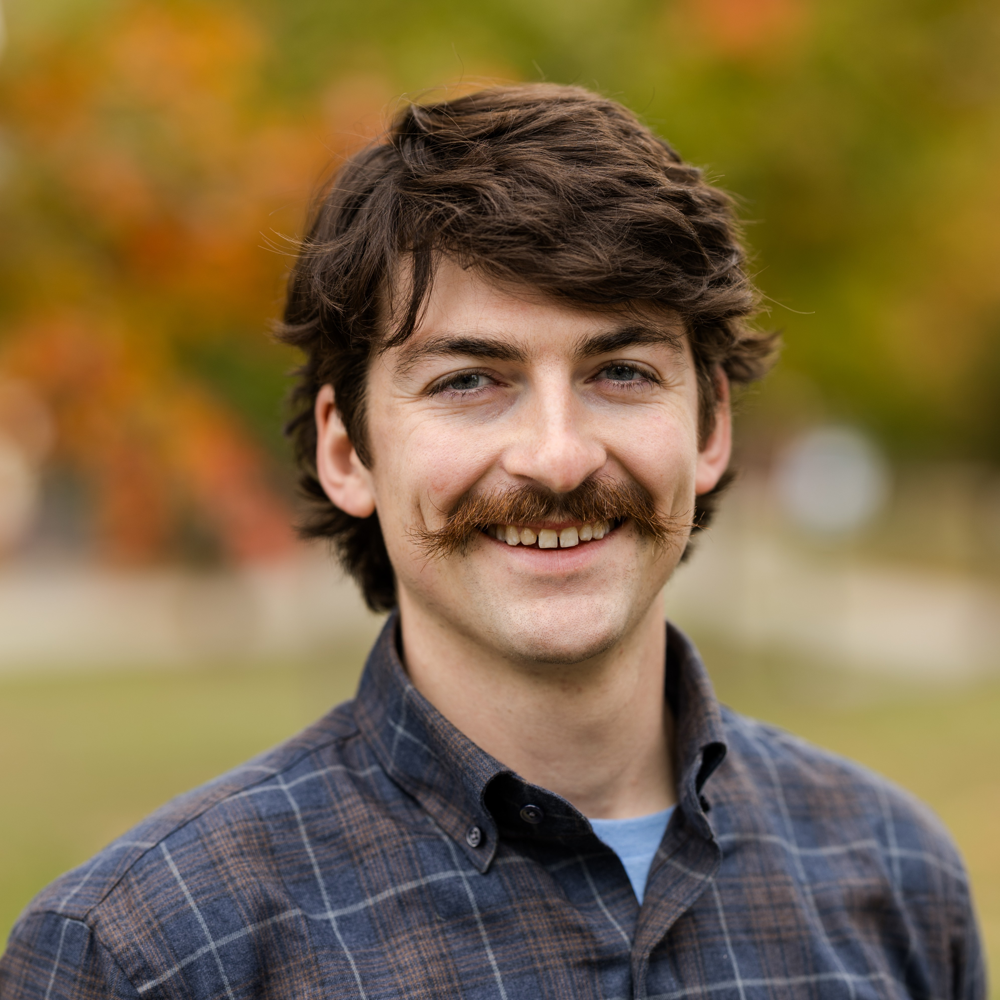

Become a Volunteer
Join forces with fellow alums and friends and become a Northfield Mount Hermon volunteer!
Your energy, ideas, and participation are always welcome at NMH, and there are many volunteer opportunities. Would you like to get involved with the Alumni Council? Would you like to help build excitement for your reunion? Connect with alumni in your area?
Learn more about the Alumni Association, committees and volunteer roles:
About the Alumni Association
 Alumni Council Executive Committee
Alumni Council Executive Committee
The Alumni Council Executive Committee currently includes the Alumni Association president, executive vice president, vice president, and secretary, as well as the chairs of each alumni council committee.
- Andrew Ness '04, President
- Wendy Alderman Cohen '67, Executive Vice President
- Tracy Korman '81, P'11, '14, Vice President
- Celia (Popper) Carboni ’72, P’15, Secretary
- Hanna Reeves '10, Advancement Committee Chair
- Eric Chatman '78, P'14, Awards Committee Chair
- Kira Manso-Brown '04, Diversity, Equity, and Inclusion Committee Chair
- Bill Rowe '83, Nominating Committee Chair
- Allison Boyd '03, Reunion Advisory Committee Chair
- Brianna Young '15, Young Alumni Committee Chair
NMH Alumni Council Goals:
- Identify partnership opportunities with NMH Advancement and support school initiatives throughout the year.
- Hold the association’s annual meeting at Alumni Convocation during NMH reunion weekend.
- Work with reunion classes to maximize attendance and improve the reunion experience.
- Award citations during reunion to a group of dedicated and talented alumni for their work on behalf of the school and their communities.
- Increase the participation of alumni on Facebook and other social media channels.
- Partner with NMH Advancement on special events at reunion.
- Engage with NMH's current student body, particularly the senior class, via events and programs that introduce them to the invaluable NMH network.
- Re-introduce NMH alumni to each other via grassroots events and networking opportunities.
Learn more about the NMH Alumni Council and the NMH Alumni Association by contacting any member of the Executive Committee, or the NMH Advancement Office at 413-498-3600 or alumni@nmhschool.org. We welcome your participation and encourage you to get involved!
Convocation 2025 Official Notice:
Members of the Northfield Mount Hermon Alumni Association are hereby notified that the
Association’s Annual Meeting (Convocation) will be held on Saturday, June 7, 2025, at 3:30 pm
in the NMH chapel. The agenda includes remarks from Head of School Brian Hargrove,
Association business including election of officers, and presentation of the Alumni Association
awards. Our Constitution and By-laws require that we have a quorum of 200 present to conduct
Association business, so please plan to attend.
The minutes from the June 1, 2024, Association Annual Meeting are posted HERE for your
convenience.
NMH Alumni Association Documents
Alumni Council Committees
- Officers
- Advancement Committee
- Awards Committee
- Diversity, Equity, and Inclusion Committee
- Nominating Committee
- Reunion Advisory Committee
- Strategic Advisory Committee
- Young Alumni Committee
Officers
The Alumni Council Officers, along with the chairs of each committee, comprise the Alumni Council Executive Committee.
Members
|
Andrew Ness '04 (he/him/his) |
|
|
Wendy (Alderman) Cohen '67 (she/her/hers) |
|
|
Tracy Korman '81, P'11, '14 (he/him/his) |
|
|
Celia (Popper) Carboni ’72, P’15 (she/her/hers) |
Advancement Committee
Members
|
Hanna Reeves '10 (Chair) |
|
 |
Thekla (Smith) Alcocer '84 |
|
Noah Babala-Money ’20 |
|
|
Danielle (Henry) Beale ’02 |
|
 |
Kate Brooks '95 (she/her/hers) |
|
Brita (Bero) Frederickson ’04 |
|
|
Paul Hwang '15 (he/him/his) |
|
|
Joe McVeigh '76 (he/him/his) |
|
|
Donnie Smith ’07 (he/him/his) |
Awards Committee
The NMH Awards Committee is charged with selecting recipients for the Alumni Association Awards, given to members of the NMH community (and one non-graduate) for exemplary service to the school, outstanding professional accomplishment, or community volunteerism. The awards are presented at the Alumni Association meeting during Reunion Weekend.
Read descriptions of each award.
Members
 |
Eric Chatman '78, P'14 (Chair) (he/him/his) |
|
Drusilla deVeer ’91 |
|
 |
Iiyannaa Graham Siphanoum '17 (she/her/hers) |
|
Tam Le ’92 |
|
|
Marina (Kenzer) Perrin ’96, P’27 (she/her/hers) |
|
|
Faye Phillips '09 |
|
|
Monique Roberts ’15 (she/her/hers) |
|
|
Jonathan Royer '04 |
|
|
Tyler Rust ’89 |
Diversity, Equity, and Inclusion Committee
Members of the NMH Diversity, Equity, and Inclusion Committee are advocates of NMH’s commitment to promote diversity and social justice on campus, to teach about the power of compassion and empathy in creating a just society, and to give students and alumni the opportunity to engage in mindful action.
The committee’s mission is to:
-
promote and support NMH’s ongoing commitment to issues of diversity and social justice.
-
increase engagement across NMH’s diverse alumni body.
-
draw attention to NMH’s diversity ideals while supporting off-campus events and activities of local alumni groups.
-
seek out opportunities to engage with current students and serve as role models or mentors.
Members
|
Kira Blayne Manso-Brown '04 (Chair) |
|
 |
Ralph Bledsoe ’79, P’96, ’99 |
|
Emily Dakin ’97 |
|
|
Danapel deVeer '90 (she/her/hers) |
|
|
Juliet Kim ’16 (she/her/hers) |
|
 |
Yann Kumin ’00 (he/him/his) |
|
Kriya Lendzion ’88 |
|
|
Maicharia (Weir) Lytle '92, P'21 (she/her/hers) |
|
 |
Rai Wilson '13 (they/them/theirs) |
Nominating Committee
The NMH Nominating Committee identifies and recruits alumni to fill open positions annually on the Advancement; Awards; Communications; Diversity, Equity, and Inclusion; Nominating; Reunion Advisory; Strategic Advisory; and Young Alumni Committees. The Nominating Committee may also recommend alumni for consideration for the NMH Board of Trustees and is responsible for filling open positions on the NMH Alumni Council’s Executive Committee, including the president, vice president, and secretary positions.
Members
|
William Rowe '83 (Chair) |
|
|
Tom Baxter '59 |
|
|
Colleen Cahill-Vieira ’92 (she/her/hers) |
|
 |
Hayley Cutler ’04 (she/her/hers) |
|
Amina Gautier ’95 (she/her/hers) |
|
|
Ian MacDonald ’04 (he/him/his) |
|
|
Ini Obot ’92 |
|
|
Allison (Rodman) Wyatt ’98 |
Reunion Advisory Committee
The NMH Reunion Advisory Committee works with the NMH Advancement Office to support reunion class committees in the planning and execution of their reunions. Committee members are assigned to work with individual classes serving as resources throughout the planning process and at reunion, with particular focus on outreach strategies and class events. Members of the committee are encouraged to volunteer at reunion where they connect with current students and alumni from a range of class years.
Members
 |
Allison Boyd '03 (Chair) (she/her/hers) |
|
James Baldwin '67 |
|
 |
Jesse Bessett '89 |
|
Rachel Francklyn '13
|
|
|
Al Gilbert '69 (he/him/his) |
|
|
Lauren (Swick) Jordan ’88 |
|
|
Kristen Kaschub ’92 |
|
 |
Jennifer Kent ’88 |
|
Sarah (Miner) Quina ’94 (she/her/hers) |
|
 |
Beth (Graden) Rom ’78 |
|
David "Skeeter" Skeeter ’85 |
|
|
Christopher Zissi '01 |
Strategic Advisory Committee
The NMH Strategic Advisory Committee supports the strategic objectives and initiatives of the school as promulgated by the Board of Trustees and Head of School. The committee may also drive initiatives that enhance the work and unity of the Alumni Association.
Members
|
Lorraine Acosta ’81 (she/her/hers) |
|
|
Katherine Radune ’95, P’23, ’25 (she/her/hers) |
|
|
James Hurwitz ’80 |
|
|
Amanda Kapp ’04 |
|
|
Diana Lafer ’81 |
|
|
Winnie (Hwang) Liu ’91, P’24 |
|
|
Bill Newman ’68, P’06 |
Young Alumni Committee
The NMH Young Alumni Committee, whose members predominantly but not exclusively graduated in the last 15 years, develops programming as well as social media campaigns and posts to reach and engage younger alums as well as the entirety of the alumni community. As the owners of NMH Alumni social media presence, the committee partners with NMH communications and supports the Alumni Council and its constituent committees with media planning and execution. Members of the committee also plan and host events in various cities and collaborate with the school to keep young alumni engaged after graduation.
Join us on Facebook!
Members
|
Brianna Young '15 (Chair) |
||
 |
Emmet Flynn ’17 |
|
|
Ayna Galtseva-Bezyuk ’22 |
||
|
Sonya Green '18 (she/her/hers) |
||
|
Isabelle Lotocki De Veligost ’15 |
||
|
Xiaoyue "Peter" Luo ’23 |
||
 |
Caroline Sullivan '15 |
|
|
Cameron Woods '12 |
Area Associations
NMH alumni are everywhere in the world, and area associations help bring them together.
NMH is only as far away as you let it be. The best way to hear about NMH events is to make sure we have your correct mailing address and email address. Update your information by sending an email to addressupdates@nmhschool.org or log into the NMH Alumni Network Directory, where you can manage your profile and search for classmates.
A great way to connect with local alumni is through social media. We encourage you to join the NMH Alumni Facebook page, more than 2,200 Hoggers strong and rich in current content and NMH events happening around the country and the world. For more information about these area associations or to inquire about starting a group in your area, contact alumni@nmhschool.org.
Atlanta, Georgia - NMH Atlanta
Join the Facebook group
Boston, Massachusetts - NMH Boston
Join the Facebook group
Central Florida Area - NMH Central Florida
Join the Facebook group
Chicago, Illinois - NMH Windy City
Join the Facebook group
Dallas-Fort Worth, Texas - NMH Dallas-Fort Worth
Join the Facebook group
Houston, Texas - NMH Houston
Join the Facebook group
New Jersey - NMH New Jersey
Join the Facebook group
New York, New York - NMH NYC
Join the Facebook group
Ohio - NMH Ohio
Join the Facebook group
Philadelphia, Pennsylvanis- NMH Philadelphia
Join the Facebook group
Portland, Maine- NMH Portland, ME
Join the Facebook group
Portland, Oregon - NMH Portland, OR
Join the Facebook group
Contact: Dith Pamp '07 at dith.pamp@gmail.com
Rocky Mountains, Colorado - Rocky Mountain NMH
Join the Facebook group
Contact: Sally Willis '82 at willissally@hotmail.com or 970-668-8002
San Francisco Bay Area, California - NMH SF Bay
Join the Facebook group
Contact: David Skeeter '85 at mossymosquito@gmail.com
Southern California - NMH SoCal
Join the Facebook group
Contact: Leo Chiquillo '09 at NMHSoCal@gmail.com
Southern New England - NMH Southern New England
Join the Facebook group
Upper Midwest - NMH Upper Midwest
Join the Facebook group
Washington, D.C. area - NMH DC
Join the Facebook group
Western New England or NMH Tri-state Area - NMH Western New England
Join the Facebook group
INTERNATIONAL CLUBS:
Hong Kong, China - NMH Hong Kong
Join the Facebook group
Korea - NMH Korea
Like the Facebook page
Toronto, Canda - NMH Toronto
Join the Facebook group
Other Volunteer Roles
- Reunion chair: Oversee your class's reunion-planning process.
- Reunion committee member: Develop your class's reunion program and encourage attendance at reunion weekend.
- Gift chair: Oversee your class's fundraising efforts.
- Class Community Liaison (formerly Class Secretary): Solicit and gather news from classmates, contribute notes to the online Class Notes, engage classmates through social media groups. Click here to read more.
If you're interested in serving on the Alumni Council or learning more about ways to volunteer, please complete the form below.
For more information about volunteer activities, contact the Advancement Office:
Phone: 413-498-3600 | Email: alumni@nmhschool.org.